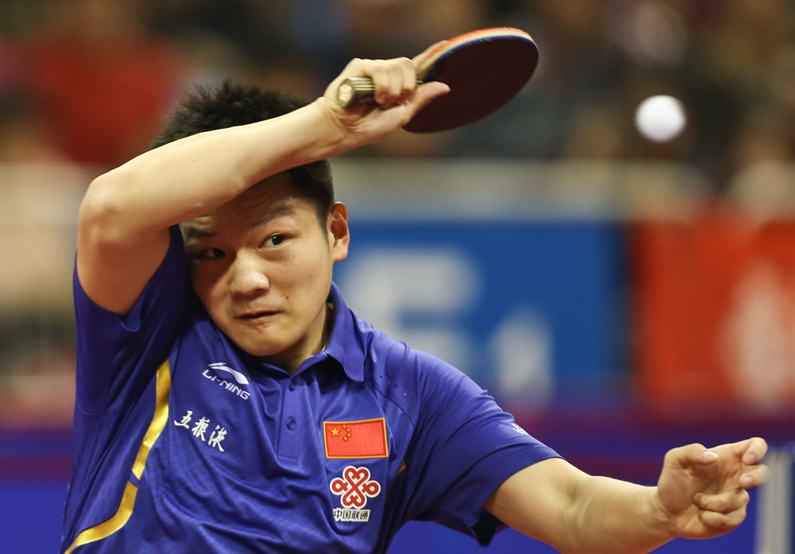
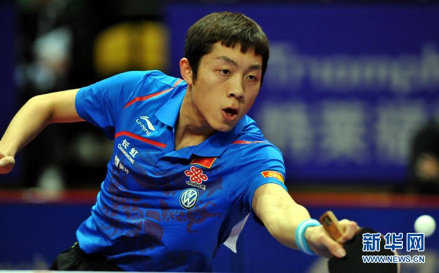
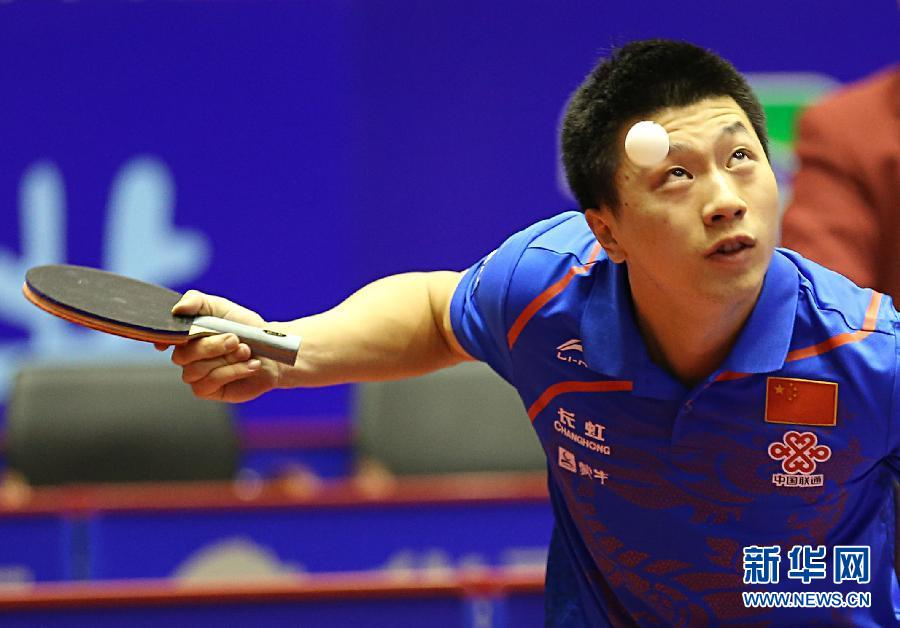

Stiga Butterfly Nittaku Xiom Crack Andro Yasaka Tibhar 紅雙喜 友誼729 Palio TSP [最新消息]: 恭喜許容睿失業 [最新消息]: 愉悅桌球建造中 [最新消息]: 每天總部報到 [最新消息]: 每天都在下大雨 [最新消息]: 每天都在耍廢 最新商品  樊振東  許昕 張繼科  馬龍 Faithful Investor Groundbreaking Artist Selfless Philantropist Next Previous